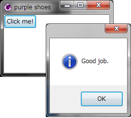
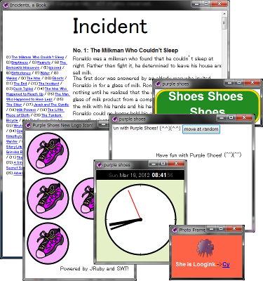

The Purple Shoes Manual 0.6.153
Hello!
Shoes is a tiny graphics toolkit. It's simple and straightforward. Shoes was born to be easy! Really, it was made for absolute beginners. There's really nothing to it. Purple Shoes is one of colorful Shoes. It is written in JRuby and SWT.
You see, the trivial Shoes program can be just one line:
Shoes.app{button("Click me!"){alert("Good job.")}}
Shoes programs are written in a language called Ruby. When Shoes is handed this simple line of Ruby code, a window appears with a button inside reading "Click me!" When the button is clicked, a message pops up.
On Windows 7, here's how this might look: 
While lots of Shoes apps are graphical games and art programs, you can also layout text and edit controls easily. 
And, ideally, Shoes programs will run on any of the major platforms out there. Microsoft Windows, Apple's Mac OS X, Linux and many others.
So, welcome to Purple Shoes' built-in manual. This manual is a Purple Shoes program itself!
Next: Introducing Purple Shoes